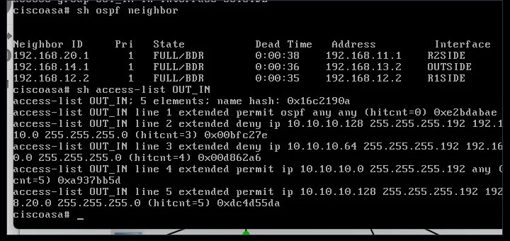
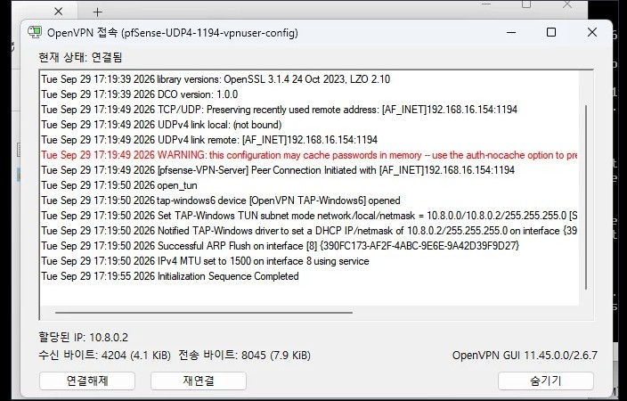

네트워크·방화벽·VPN
GNS3 · Cisco ASAv · pfSense
방화벽 규칙 5개 · 차단 확인OpenVPN 접속 확인OSPF 이웃 유지


GNS3에서 라우터·방화벽·VLAN을 구성하고 pfSense OpenVPN까지 연결했습니다.
자세히 보기
구성라우터 4대와 방화벽을 OSPF로 묶고, 외부망을 VLAN 3개(네트워크·시스템·침투 테스트)로 나눴습니다. 방화벽 규칙 5개와 pfSense OpenVPN을 구성했습니다.
확인규칙을 적용하기 전에 통신이 되는 것을 기준으로 남기고, 적용한 뒤 ACL 히트 카운트로 차단이 실제로 동작하는지 확인했습니다. 규칙마다 OSPF 허용을 맨 위에 넣어 이웃이 유지되는 것도 확인했습니다. OpenVPN은 윈도우 PC로 접속해 터널 주소 할당과 AES-256-GCM 암호화까지 확인했습니다.
막힌 곳pfSense에서 WAN에 잘못 넣은 고정 IP의 게이트웨이가 남아 기본 경로가 깨졌고, 패키지 저장소에 접속할 수 없었습니다. 원인을 찾아 VM을 다시 설치하고 WAN은 DHCP로 두는 것으로 해결했습니다.